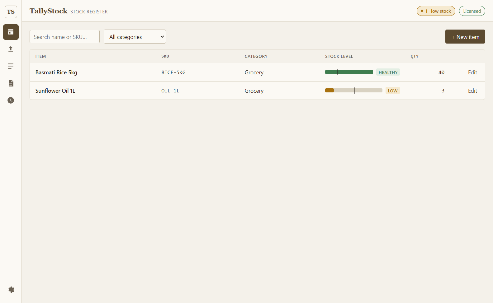

Most inventory apps for small shops are either a spreadsheet that gets messier every month, or a cloud subscription that stops working the day you miss a payment or lose signal. TallyStock is neither: it's a proper desktop app that installs once, keeps every item and every stock movement on your own computer, and never asks for a recurring fee.
The design borrows from a physical stock register on purpose — a ledger table, tabular numerals for quantities and SKUs, and color used only where it means something: green for healthy stock, amber for low, red for critical. The signature element is a horizontal gauge bar per item with a tick mark at your reorder threshold, so you can scan a shelf's worth of items and see what needs reordering without reading a single number.
What's included
- Item register — name, SKU, category, quantity, and reorder threshold per item
- Stock in/out entry with a running, timestamped movement log
- Low-stock alerts — a header count plus gauge-bar coloring, so it's visible everywhere, not buried in a report
- CSV import/export — bring in an existing spreadsheet, matched and updated by SKU
- Backup/restore, with an automatic safety copy taken before any restore
- Works offline — everything runs on your machine; the license re-checks online periodically, with up to 14 days of offline use in between
Standard or Pro — which one do you need?
Both editions have identical features. The only difference is how they store data, and it's a difference most shops will never notice:
| Standard — ₹699 | Pro — ₹999 | |
|---|---|---|
| Good for | The vast majority of shops — typical periodic stock-in/stock-out entry | High-volume operations: many SKUs, very frequent entries, used continuously for years |
| Speed as data grows | Instant for years of normal use; could gradually slow after tens of thousands of accumulated stock entries pile up | Stays fast regardless of how much history accumulates |
| Installation | No native components — never affected by antivirus or Application Control policies | Includes a compiled database component; on a small number of PCs with strict security software, may need a one-time setting change to install |
Honestly: if you're not sure, buy Standard. It's the right choice for almost everyone, and it isn't a crippled version of Pro — it's the same app, built to stay fast for the volume a typical shop actually generates.
Built for retail math too
Running the numbers around your stock doesn't stop at counting units. A few free calculators on this site pair naturally with TallyStock's register: GST / VAT for pricing and invoices, Margin and Break-Even for pricing decisions, Business Loan for financing stock purchases, and Commission if staff are paid on sales.